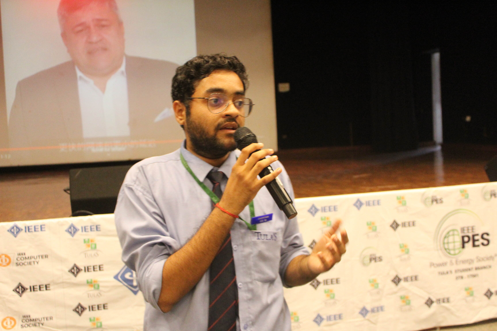
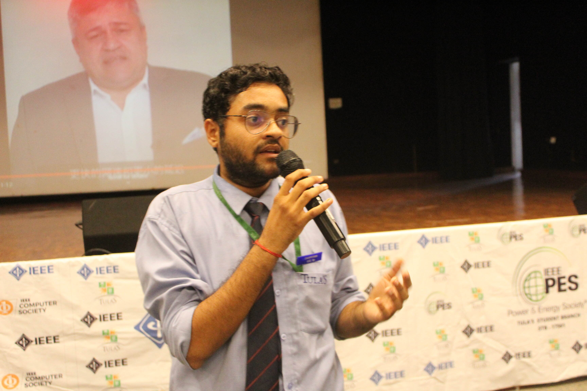
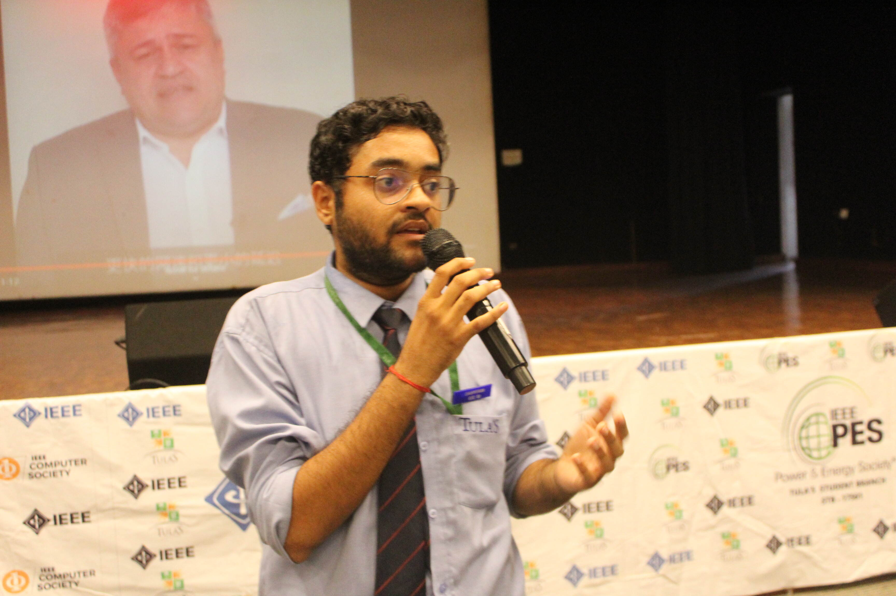

Made By: NIKHIL MATHUR
New set uploaded every 2 days
Coding is not just about writing lines of code; it's a creative process that allows you to build innovative solutions, solve real-world problems, and express your ideas. Daily coding practice helps you refine your problem-solving skills, enhances your logical thinking, and boosts your creativity. It's an essential skill for the digital age.
These questions are designed to be diverse in both their level of complexity and their nature. They include tasks like finding the oldest age among a set of inputs, converting temperature values from Celsius to Fahrenheit, and swapping numbers, which are suitable for beginners and those looking to strengthen their foundational programming skills.the questions presented offer a well-rounded experience, making them accessible to individuals at various stages of their coding journey and encouraging a mix of logical reasoning, mathematical understanding, and algorithmic thinking.
These questions cover a range of difficulty levels, from easy (questions 1, 2, 5, and 6) to moderate (questions 3 and 4). They include a mix of basic programming logic, mathematical calculations, and geometric problem-solving. They are suitable for individuals looking to strengthen their foundational programming and mathematical skills..
The following set of programming tasks cover a range of difficulty levels. Starting with a basic program to add the squares of three digits, moving to an intermediate level program that checks for Armstrong and narcissistic numbers, and another intermediate program for calculating in-hand salary after deductions, and finally, a beginner-level menu-driven program for unit conversions. These exercises require varying levels of creative thinking and coding expertise, making them suitable for a diverse audience of programmers.

Made By: NIKHIL MATHUR
New set uploaded every 2 days